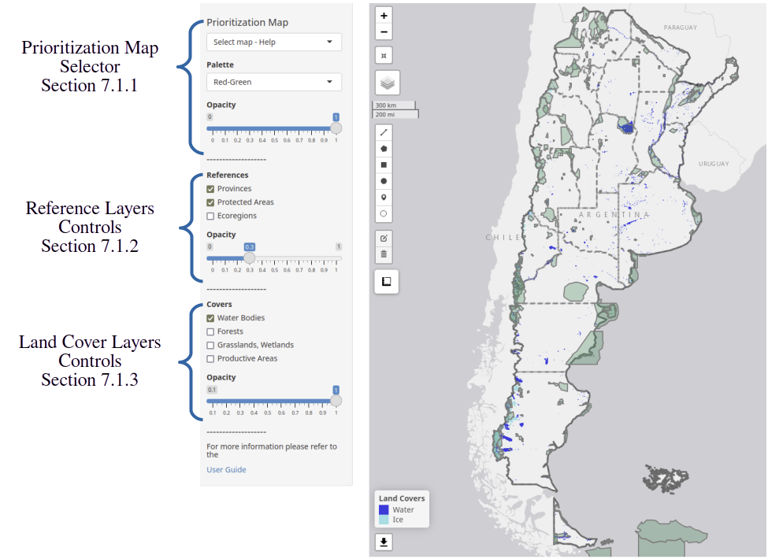
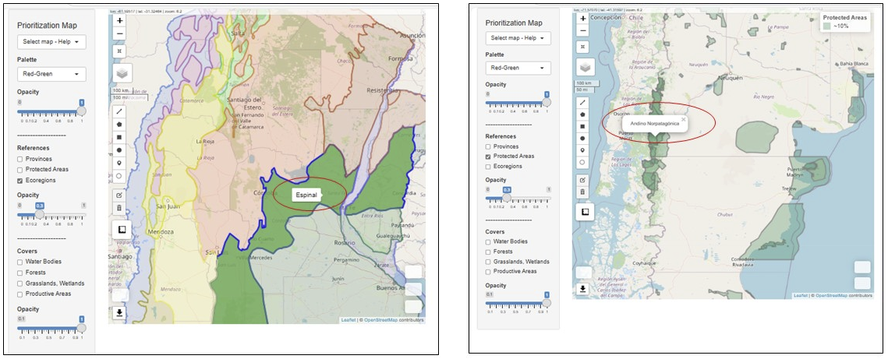
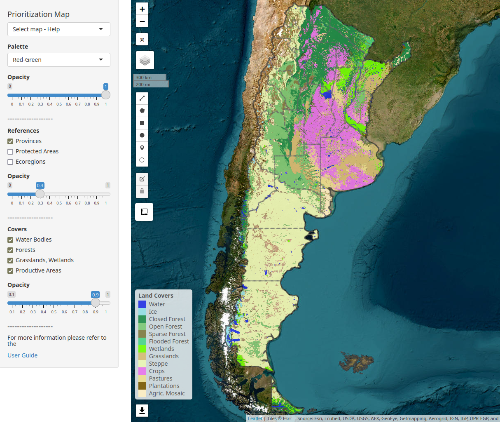
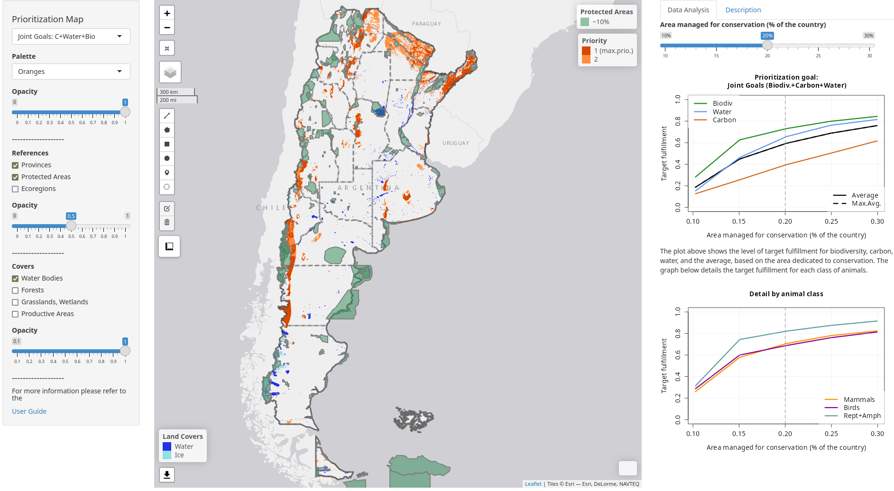
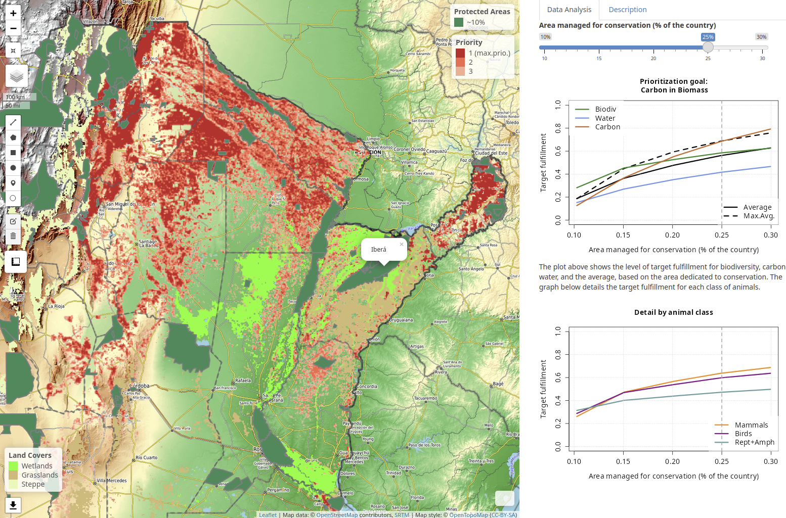
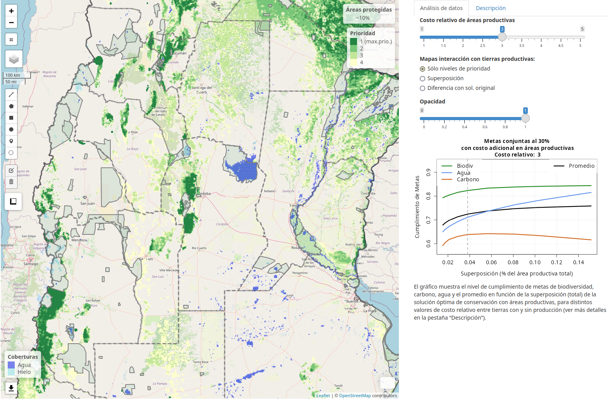
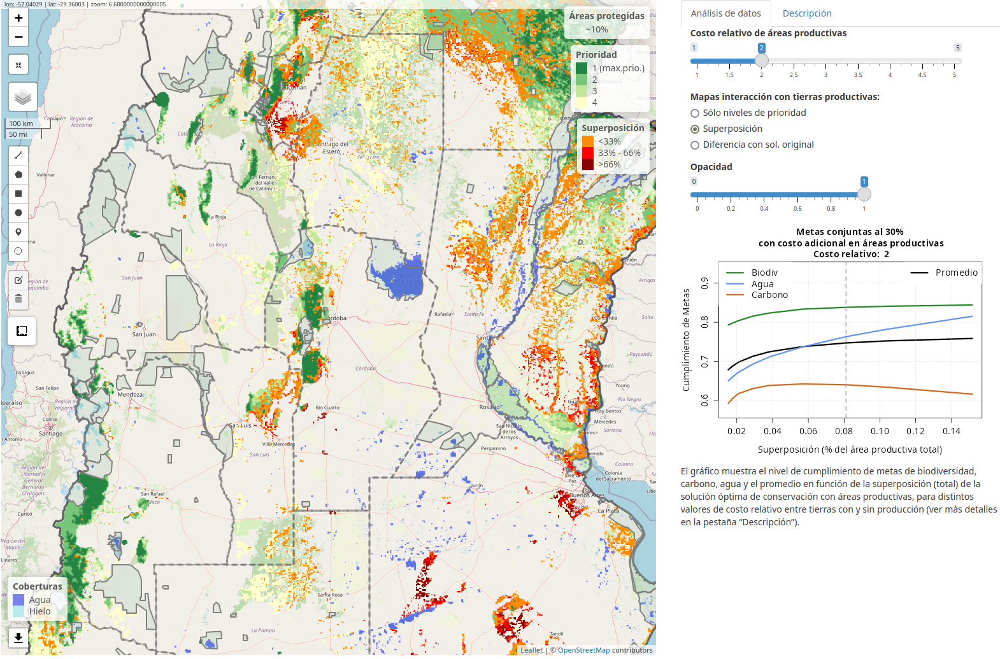
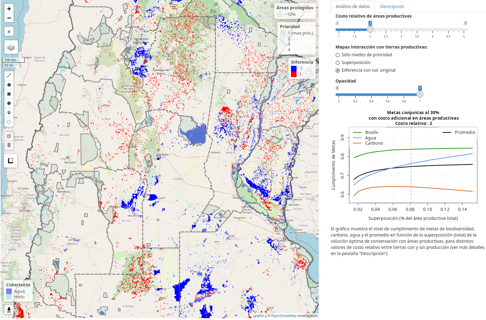

7 Display Controls
7.1 Left Panel
The user interface includes a fixed menu on the left side that contains the main controls for enabling and disabling various information layers. For better visualization, it is recommended to use the browser’s full-screen mode. The viewer is designed for optimal display in Full HD (1920x1080).

Figure 7.1: The left side panel provides the main control of the layers.
7.1.1 Prioritization Map Selector
At the top left corner, the main prioritization map selector can be found. The available layers are listed in Table 7.1. Below this dropdown menu, there is another selector for the color palette and a slider to control opacity. Table 7.1 suggests the color palette that, by convention and contrast, can be used for each map. The “Select Map - Help” option allows clearing the main viewer window so that only the reference layers, coverages, and background layers are visible. It also activates a help menu in the right panel.
| Prioritization Map | Color Palette |
|---|---|
| Biomass Carbon | Red - Green |
| Water Provision | Blue |
| Biodiversity | Green - Yellow |
| Mammals | Orange - Violet |
| Birds | Pink - Green |
| Reptiles and Amphibians | Yellow - Red |
| Carbon and Biodiversity | Red |
| Carbon and Water | Red - Blue |
| Joint Targets | Red - Green |
| Productive Areas Interaction | Pink - Green |
Table 7.1: Suggested color palette for prioritization maps
7.1.2 Reference Layers
The reference layers correspond to Boundaries, Ecoregions, and Protected Areas of Argentina. The Ecoregions and Protected Areas layers consist of polygons, on which users can query the associated information for one or more activated layers by clicking on each of them, as shown in Fig. 7.2.

Figure 7.2: The reference layers include provincial boundaries, current protected areas, and ecoregions. They allow users to query information by clicking on the polygons.
7.1.3 Land Cover Layers
The land cover classification is based on MapBiomas Argentina (MapBiomas 2024), according to the dominant coverage in each PU (see Sec. 4.8). For activation, the MapBiomas classes are grouped as follows:
- Water bodies
- Forests
- Grasslands, Wetlands
- Productive Areas
When each group is activated, the corresponding legend appears in the lower-left section of the main viewer window, as shown in Figure 7.3.

Figure 7.3: The land cover classification of each PU is based on MapBiomas. The activation of classes is carried out in groups.
7.2 Right Panel
The right panel has two tabs: one for data analysis and another for a description of the selected prioritization map. The data analysis tab has two modes: data analysis for prioritization maps, described in Sec. 7.2.1, and interaction analysis with productive areas, described in Sec. 7.2.2.
7.2.1 Prioritization Data Analysis

Figure 7.4: For prioritization maps, the right panel displays a slider that allows selecting the percentage of area dedicated to conservation, ranging from 10% (current protected areas) to 30% (including the four priority levels). Additionally, two charts showing target fulfillment are displayed.
The prioritization maps, in the 9 available analysis variants, activate the data analysis controls in the right-hand panel. The slider at the top allows you to select the amount of priority area to be displayed (see Fig. 7.4). The possible values range from 10%, in which case only the protected areas are displayed (if that reference layer is selected, see Sec. 7.1.2). The slider allows you to add priority levels one by one, starting from the highest in sequential order. Each level represents 5% of the territory, up to a maximum of 30%. As the slider moves, a gray dashed vertical line indicates the level of target achievement for each conservation feature, as shown in Fig. 7.5). The graph below shows the average target achievement for the different animal classes considered.

Figure 7.5: The graphs show how the target fulfillment increases as more land is dedicated to conservation. The top graph shows the progress of biodiversity (green), water (blue), carbon (brown) and the average of them (black). The progress of prioritizing joint targets is also shown in dashed lines. This represents the maximum achievable value.
7.2.2 Analysis of Interaction with Productive Areas
The right-hand panel has a special configuration for the case of interaction with productive areas. In this case, the top slider controls the relative cost of productive areas, as shown in Fig. 7.6. As this value increases, the level of interaction between the prioritization solutions and production areas decreases. In these cases, the prioritization of joint targets (biodiversity, carbon, and water) is considered, using 30% of the surface. For more information on the model and the meaning of the relative cost, see Sec. 5.5.

Figure 7.6: For the analysis of interaction with productive areas, the right-hand panel includes a slider to control the level of interaction through the relative cost of productive areas. As this value increases, the prioritization result changes.
Below the main relative cost slider is the control for layers of interaction with productive areas, along with its corresponding opacity control. The available options, which are mutually exclusive, are:
- Priority levels only: Only the result of the modified joint target prioritization (Sec. 5.5) is shown, including the 4 priority levels and varying the relative cost of productive areas (Fig. 7.6).
- Overlap: A layer is activated that overlaps with the previous one, showing the high-priority conservation areas that spatially coincide with agricultural, livestock, or forestry production areas (see Fig. 7.7).
- Difference with the original solution: A layer is activated that overlaps with the priority areas, showing the areas that become more prioritized (red) and those that should be removed from the original solution to reduce the interaction of the conservation solution with production areas.

Figure 7.7: The overlap of each conservation solution with production coverages is visualized in orange tones according to the level of coincidence in each PU (three levels are considered). The total overlap value, relative to the total productive area, can be seen on the x-axis of the graph, indicated by a vertical line.

Figure 7.8: The third option for the layers of interaction with productive areas is the difference with the original solution. In red, the areas of the new solution that are not in the original solution are shown, and in blue, the areas of the original solution that are not in the solution with reduced interaction. This map shows how priority areas need to be relocated to maintain a high level of target fulfillment while reducing spatial overlap with food and forestry production regions.
The graph shows the level of target fulfillment for biodiversity, carbon, water, and their average as a function of overlap with productive areas. The original solution is located on the far right, with an overlap of about 15% of the approximately 53 million hectares dedicated to food or forestry production. As a higher relative cost is introduced into the model for productive areas, the optimization process progressively selects fewer productive areas. The strength of the algorithm developed in this work is its ability to maintain a high level of target fulfillment while reducing overlap with productive areas. Initially, the level of biodiversity protection remains almost constant, water protection decreases, and biomass carbon protection increases, showing a synergistic behavior for this conservation feature.